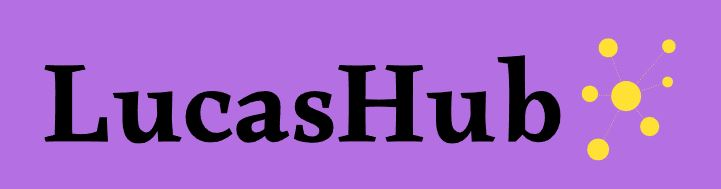

<div>
  <mat-toolbar
    style="
      background: linear-gradient(to right, #b46fe2, black);
      margin: 0 0 0px 0px;
      height: 20%;
    "
  >
    <div style="display: flex">
      
      <div
        style="
          width: 130px;
          height: 70px;
          background: linear-gradient(to right, #b46fe3, #8c56b0);
        "
      ></div>
      <span
        style="
          font-family: 'Roboto Serif', serif;
          font-weight: 600;
          margin-top: 2%;
        "
        >O hub mais completo de informações sobre este que vos fala.</span
      >
    </div>
  </mat-toolbar>

  <mat-toolbar
    style="height: 4%; background: linear-gradient(to right, #ff97ff, black)"
  >
    <button mat-button [matMenuTriggerFor]="Games">Games</button>
    <button mat-button [matMenuTriggerFor]="RPG">RPG</button>
    <button mat-button [matMenuTriggerFor]="movies">Filmes</button>
    <mat-menu #Games="matMenu">
      <button mat-menu-item>Melhores jogos</button>
      <button mat-menu-item>Piores jogos</button>
    </mat-menu>

    <mat-menu #RPG="matMenu">
      <button mat-menu-item>Campanhas idealizadas</button>
      <button mat-menu-item>Campanhas realizadas</button>
      <button mat-menu-item>Campanhas canceladas</button>
    </mat-menu>

    <mat-menu #movies="matMenu">
      <button mat-menu-item>Filmes favoritos</button>
      <button mat-menu-item>Melhores filmes</button>
      <button mat-menu-item>Filmes medianos</button>
      <button mat-menu-item>Piores filmes</button>
    </mat-menu>
  </mat-toolbar>
</div>
